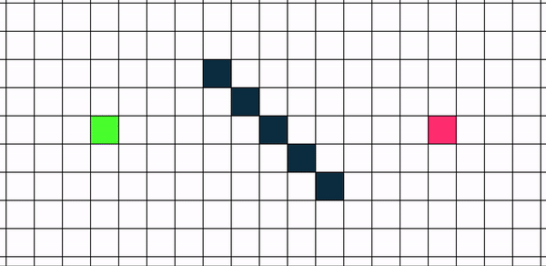

Choose Algorithm/Maze To Animate>
Cost: N/A
Nodes Visited: N/A
Pathfinder Visualizer
Welcome!
This app visualizes various pathfinding and maze building algorithms. To learn more about the app, follow this short tutorial.
Grid + Nodes
The grid represents a graph of different nodes. Top, right, bottom, and left movements can be performed from one node to another one.
Start (green) and End (red) nodes are draggable. If an algorithm visualization is completed, the app will re-calculate the path in real time.
The final path will be made yellow.
Obstacles

There are two obstacle types in the app:
- wall - no way through
- weight - node with doubled cost to get in/out of it
To place an obstacle on the grid, press right mouse key and move around.
Pathfinding + Mazes
There are two algorithm categories:
- to find the shortest path (Dijkstra's, A*)
- to check if end node is reachable (BFS, DFS-recursive, DFS-iterative)
To start visualizations, press the corresponding buttons. When the animation is running, most of the buttons and node dragging functionality are disabled.
You can also choose different obstacle type before generating a maze.
Grid Manipulation + Animation Speed
Clean Path button cleans a calculated path.
Reset Field button cleans all obstacles and a path.
Cancel Animation button terminates an animation in process.
Grid Dimension range defines how many cells you have in a row.
Animation Delay range adjusts the delay in ms for an visualization.
Report
A report gets generated during/after you start a visualization.

You will be able to see the following reported:
- a brief algorithm/maze description
- only for algorithm visualizations:
- Cost - how much it costs to get from start to end (to influence it, you can put weighted nodes)
- Nodes Visited - how many nodes the final path includes
If there is no solution, the report will say so.
Other
You can switch between day/night color modes.
To view this tutorial again, you can click an Info button at any time.
Enjoy :)